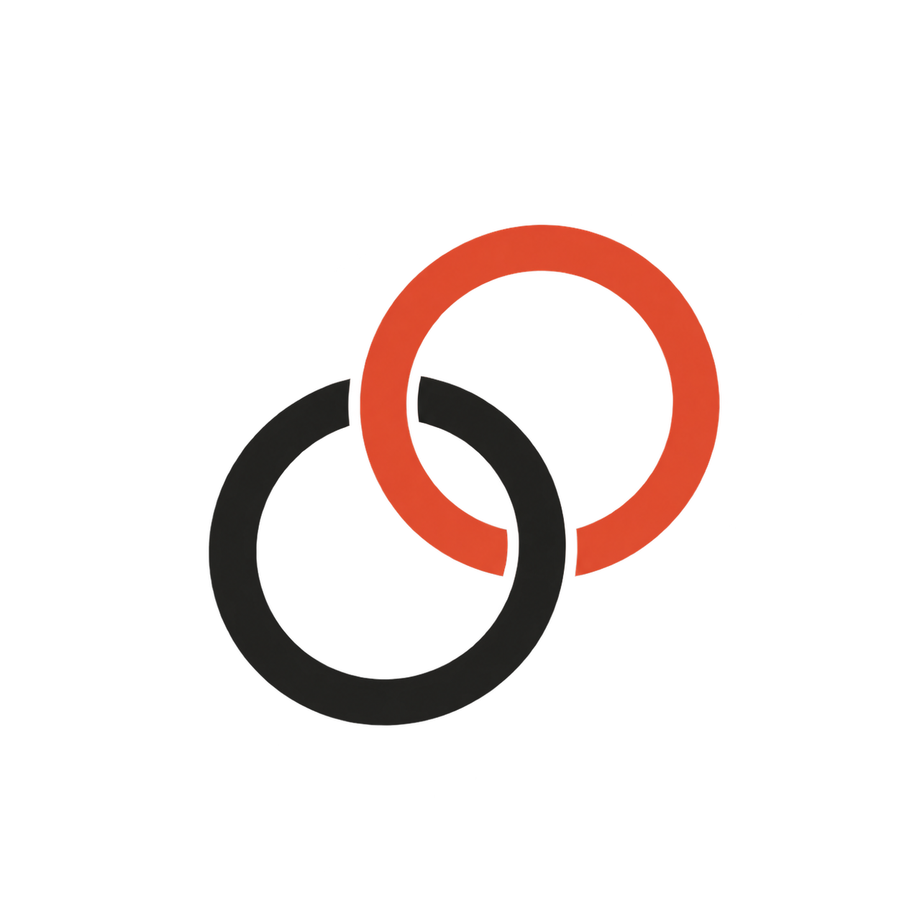

打开的，仍是你的文件
笔记以 Markdown 保存在本机，支持 Obsidian 文件夹。你可以继续手动编辑，也可以通过 Git 记录与同步改动。
.md ↔ Obsidian ↔ Git
Learning-Kit从一段话里找到重要的信息，再理解它们之间的关系。
读一句话时，我们会关注不同的词。Attention 让模型根据当前语境，为相关信息分配不同的权重。
这个例子很好，再简洁一点。
工作流示意 · 内容由你审核后保存
少一点整理的负担，多一点理解的空间。
一条自然的思考路径
把整理交给助手，把判断留给自己。
带着语境，检索已有内容并整理草稿。
历史 K/V 会被后续步骤读取，因此值得保留。Q 只服务当前的查询。
每一篇笔记，都可以成为下一次理解的起点。
先暂存关键词；点击提交，才开始处理。
助手参与，主导权在你
好的工具，应该让你的理解留下来。
笔记以 Markdown 保存在本机，支持 Obsidian 文件夹。你可以继续手动编辑，也可以通过 Git 记录与同步改动。
.md ↔ Obsidian ↔ Git确认写作风格和主题熟悉度，让回答详略得当。记忆由你选择作用范围，也可以随时撤销或关闭。
使用本机 Codex CLI 登录状态，不必为这条路径另填 API Key。AI 处理时，对话和用到的笔记内容会发送至所选服务。
打开下载的 DMG，把 Learning-Kit 拖到 Applications。升级前，请先退出旧版本。
选择已有 Markdown / Obsidian 文件夹，或创建一个新的知识库。
在“设置 → AI 助手 → Codex 连接”检查本机已登录的 Codex CLI，然后开始你的第一组轻记。
当前包面向 Apple Silicon，声明最低 macOS 14，实测 macOS 27.2。Intel 和其他 macOS 版本尚未验证。
当前为 ad-hoc 签名预览版，未经过 Apple 公证。首次打开若被系统阻止，确认来源和校验结果后，可到“系统设置 → 隐私与安全性”允许此次打开。 Apple 官方说明 ↗
shasum -a 256 -c
Learning-Kit-0.1.1-macos-arm64-adhoc.dmg.sha256
将 DMG 和校验文件放在同一文件夹，在该目录运行上述命令。
这是早期预览版。模型服务、旧系统和 WidgetKit 的验证范围，以及会话容量等已知限制，请查看 发布记录。